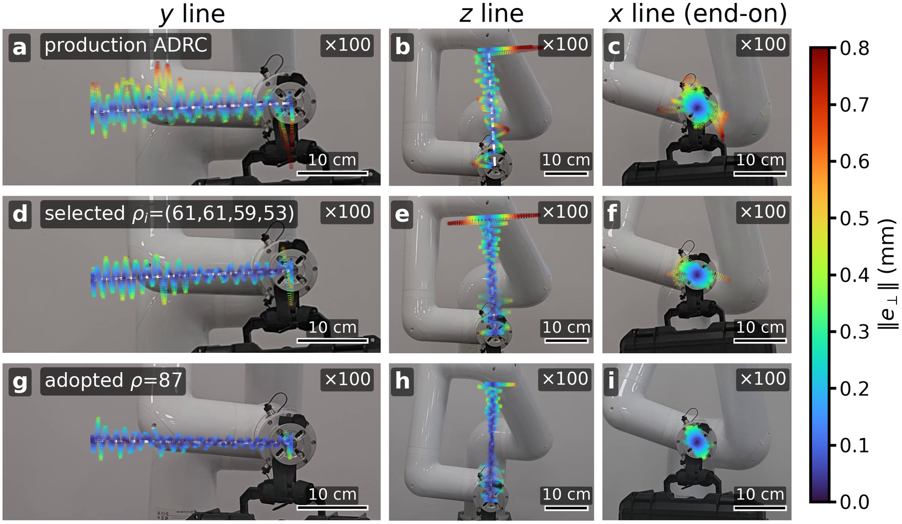
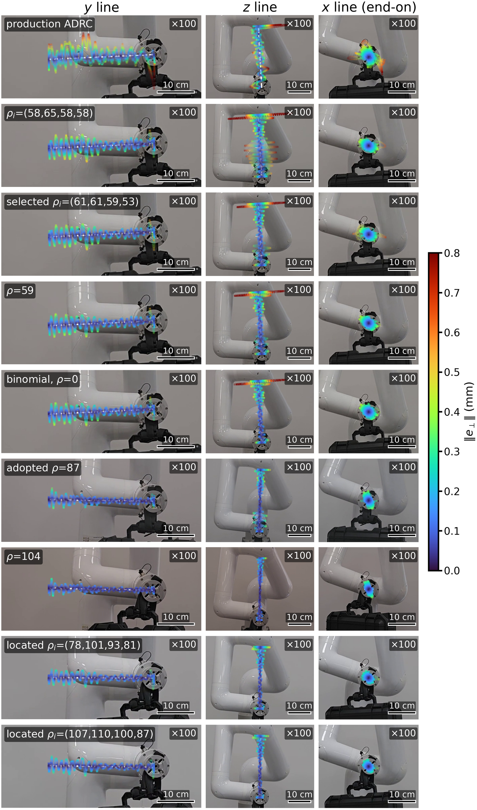

Bayesian Optimization of a Fourth-Order Extended State Observer With Pole Relocation for Robot Manipulators
1WIM Inc., Daegu, Republic of Korea 2Department of Electronics Engineering, Incheon National University, Republic of Korea
Manuscript under review, IEEE Transactions on Industrial Electronics (2026)

Abstract
Disturbance compensation in active disturbance rejection control (ADRC) depends on how well the extended state observer (ESO) follows changes in the joint disturbance. The standard third-order ESO lags behind the changes that a moving payload causes; a fourth state that estimates the disturbance rate reduces the lag, but the usual binomial pole placement reduces the stability margin and can drive the low-inertia wrist joints into the torque clamp. We introduce a gain rule that relocates the four observer poles with one parameter per gain order and select its parameters by constrained Bayesian optimization on a simulated manipulator with randomized delay, noise, and disturbances, keeping the torque demand of every joint within its clamp.
On a 6-DOF manipulator with its production ADRC gains, the selected setting reduced the perpendicular path error along Cartesian lines, with and without a suspended payload, without reaching the clamp. Stepping the relocation parameter beyond the feasible region of the search then located the margin of the robot: a common-value setting that the search excludes reduced the error further and ran cleanly, while the next larger tested value oscillated. We adopt the former, the most accurate setting of that test without a sustained oscillation; a search repeated under the located margin returns settings on the same boundary that are no more accurate on the robot. Most of the accuracy gain came from the observer order; what the search contributes is the choice of the trade-off between accuracy and torque margin on an uncertain plant, and the selected setting remains the choice where the delay or the mismatch is not known.
Study design

One rule, four parameters
A fourth-order ESO whose four poles are relocated by one parameter per gain order, ρ1…4, while the production bandwidth ωo and the joint-controller gains stay fixed. Zero parameters recover the binomial fourth-order observer; a common value ρ changes the relative pole locations.
Search with a torque budget
Constrained Bayesian optimization on an Isaac Sim model of the Indy7 with randomized loop delay, sensor noise, input-gain mismatch and disturbances. The cost weighs path errors and torque activity against the production ADRC; every joint must stay within its torque clamp on every configuration.
Validation on the robot
Cartesian line tracking on an Indy7 running the production real-time controller at 1 kHz, with and without a 4.5 kg suspended payload. Errors are computed from the joint encoders; the measured deviations are drawn on the video frames magnified 100 times.
Margin against accuracy along the rule

For a common ρ the quadruple binomial pole splits into one fast real pole and three slower ones. The estimation error stays exponentially stable for every ρ ≥ 0, but with loop delay the input-gain margin is finite: it rises from the binomial observer to a peak near ρ = 35 and then falls, while the disturbance residual keeps shrinking. The search therefore chooses a point on this trade-off rather than the fastest observer.
| Setting | Wrist margin λ |
|---|---|
| Production third-order ADRC | 5.6 |
| Selected ρi = (61, 61, 59, 53) rad/s | 2.28 |
| Uniform ρ = 59 | 2.16 |
| Binomial fourth-order (ρ = 0) | 1.76 |
| Adopted ρ = 87 | 1.51 |
| ρ = 104 (oscillated on the robot) | 1.21 |
Search on the randomized plant

The search evaluated 52 candidates on seven plant configurations each. The selected per-order setting lowers the simulated cost to 0.88 of the production ADRC while staying clear of the clamp on all configurations; among the evaluated candidates, none that beats the production ADRC tolerates a wrist input-gain ratio above about 2.4.
Validated on eleven motions and seven new configurations, the selected setting stayed below the clamp on all 55 motion–configuration pairs with delay ≤ 8 samples and wrist mismatch ≤ 2.3, where the binomial observer reached the clamp. The common values ρ = 87 and 104 are more accurate on the mild configurations but saturate on the severe ones.
Hardware results

Lower perpendicular error
Selected setting against the production ADRC on three lines, with and without the payload; reversal error 32–47 % lower. No joint reached the torque clamp (peak demand 0.64 of the clamp).
Adopted ρ = 87
A common value that the search excludes ran cleanly on this robot and reduced the perpendicular error further (reversal error 63–79 %, orientation error 47–66 % lower). It is the most accurate setting of its session without a sustained oscillation.
Where the margin ends
The next larger tested value, ρ = 104, carried a sustained wrist oscillation on the z line without reaching the clamp. Through the loop model this places the robot's wrist input-gain ratio between the margins of the two settings, 1.21 and 1.51.
All tested settings

Supplementary video
3 min 11 s, narrated. Study design, hardware set-up, the three lines with and without the payload (measured deviations drawn ×100, live joint-5 torque), the simulation search and a summary. Download (MP4, 25 MB).
Citation
@article{kim2026bofo,
author = {Kim, Hwarang and You, Sesun},
title = {Bayesian Optimization of a Fourth-Order Extended State Observer
With Pole Relocation for Robot Manipulators},
journal = {IEEE Transactions on Industrial Electronics},
year = {2026},
note = {under review}
}Corresponding author: Sesun You. The Indy7 is a product of Neuromeka; the production ADRC and the real-time controller PLEM are WIM Inc.'s. The simulation used NVIDIA Isaac Sim and BoTorch.